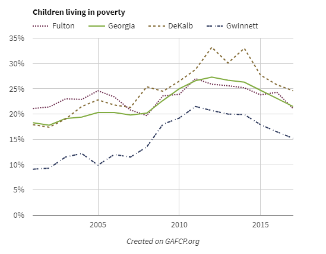

2020 - now
Senior Geospatial Developer at Beck's Hybrids
Indianapolis, IN / backend, data, geospatial
I work across backend services, geospatial processing, ETL, and decision-support software. Most of my recent work is in precision agriculture, but I also build independent tools in agriculture and real estate.
My strongest work sits where data scale, spatial systems, and production reliability meet.
2020 - now
Senior Geospatial Developer at Beck's Hybrids
400+
Jira tickets delivered across production systems
Open source
Python, GeoParquet, COG, Kubernetes, DuckDB, S3
Operator view
Private real estate investing and product work outside my day job
Current Role
Core data path
I built the current controller-data system from scratch. It replaced Windows-server and proprietary ArcGIS dependencies with an open-source Python architecture built for Kubernetes-native, cloud-native operation.
This is the processing path for the machine data that makes up the farm record: harvest, planting, application, tillage, and related field operations.
What I own
Selected Work
Scale
Built for high-volume, high-dimensional precision agriculture data, using storage and geospatial formats suited for cloud processing, including GeoParquet, Parquet, cloud optimized GeoTIFFs, shapefiles, GeoJSON, and object storage.
Integrations
Delivered cross-repo integration work covering database schema, API support, OAuth2, shapefile ETL, backend services, and frontend import flows.
Geospatial
Built POLARIS soil-data flows with cloud optimized GeoTIFF conversion and object storage, plus geometry-heavy workflows such as swath-based polygon generation.
Platform
Migrated the main Python environment from Conda to Pixi and contributed to the cleanup and stabilization work needed to retire older controller-data paths.
Independent Projects

Agriculture
Agricultural management-zone generator for turning uploaded field data into usable zone outputs.

Real estate
Real estate analysis app for investor workflows with map exploration, filters, favorites, bid tracking, and a demo-ready dataset.
Operating business
I also run a private real estate investment business. That work shapes how I think about acquisition workflows, underwriting, redevelopment, and software that supports operations instead of demos.
Background
Senior Geospatial Developer focused on controller data, ETL, geospatial processing, integrations, and cross-repo delivery.
Delivered custom data, mapping, and web application work for government, nonprofit, education, and museum clients.
Run a private real estate investment business alongside my engineering work.
Built irrigation and sensor-driven agricultural software across web delivery, databases, mapping, and field systems.
Role Fit
Python services, async processing, SQL-backed workflows, and production data-path ownership.
ETL, large-scale geospatial data, storage formats, and cross-system processing flows.
Production geospatial processing with GeoPandas, Shapely, GeoParquet, COG, field geometry, and soil data.
OAuth2, partner data ingestion, API support, and the platform work needed to keep integrations operational.
Contact
I am most relevant for backend platform, data platform, geospatial, and integration roles. If you want the current resume or a tailored version for a role, email me.
Indianapolis, IN / open to remote / updated April 2026